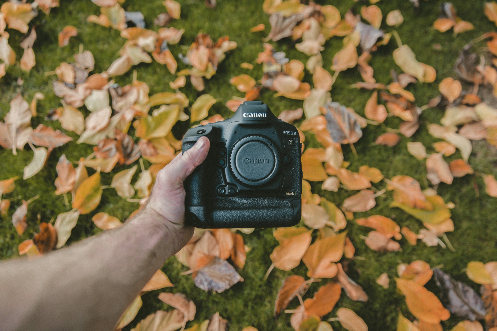

ABOUT

MEET SAM
I’m Sam, the heart behind SMD Photography based in Sorrento, Florida. With years of experience and a passion for storytelling, I specialize in family & specialty portrait photography that captures moments as they naturally happen. Photography isn’t just snapping pictures—it’s about celebrating your life, your special moments, and your loved ones in a friendly and casual style.
WHY PHOTOGRAPHY?
Photography has been my way to capture genuine connection. What started as a love turned into a career fueled by people and their stories. Every family, couple, and individual deserves images that feel real, timeless, and full of life.
From the first flash to the final gallery, I deliver more than photos—I offer a memorable experience that celebrates you.
FAQs
What are your hours?
I’m available for sessions throughout the week with flexible hours to fit your family’s schedule in Sorrento. Just reach out to find a time that works best for you!
Where are you located?
My studio and session base is in Sorrento, Florida. I also love shooting in beautiful outdoor spots nearby to capture your most natural moments.
What payment options do you accept?
I accept various payment options including credit cards, PayPal, and direct bank transfers to make booking hassle-free.
How long is the typical wait?
Turnaround time for final images is usually 2-3 weeks, ensuring careful editing and a polished collection you’ll love.
Do you have a cancellation policy?
Yes, cancellations require at least 48 hours notice. I’m happy to reschedule sessions to accommodate your needs whenever possible.